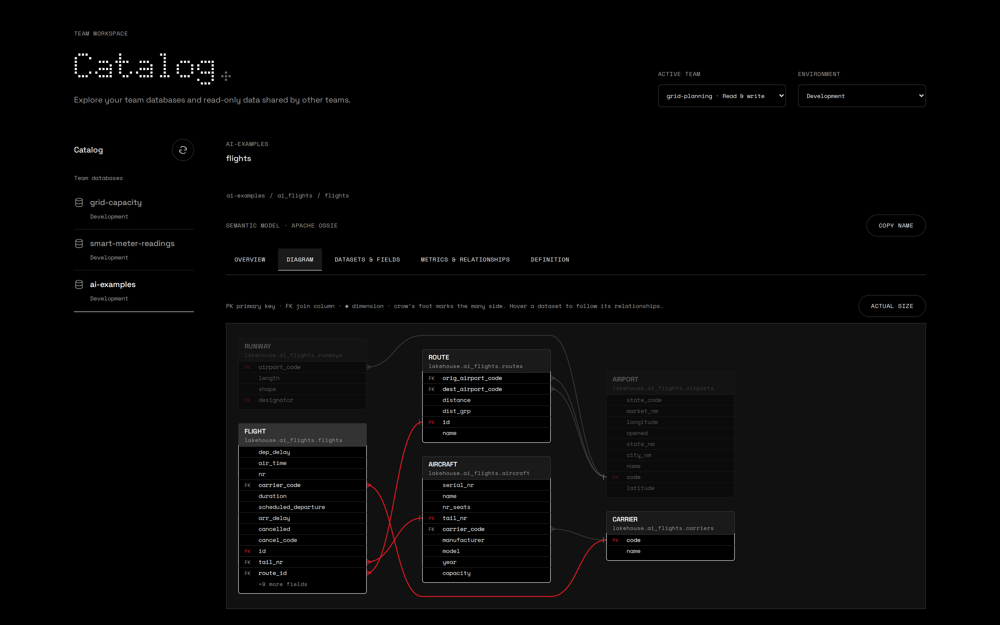
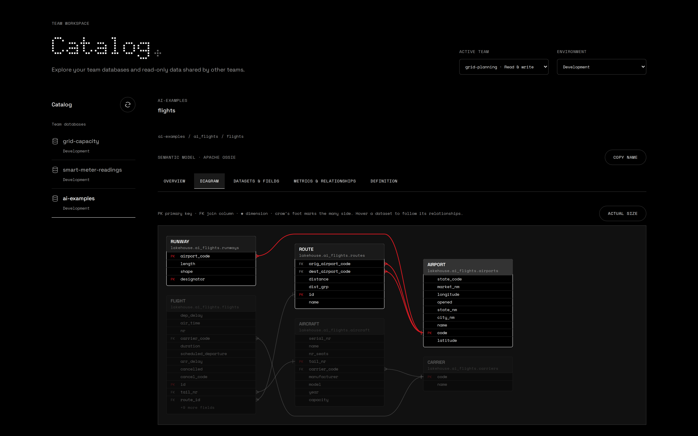
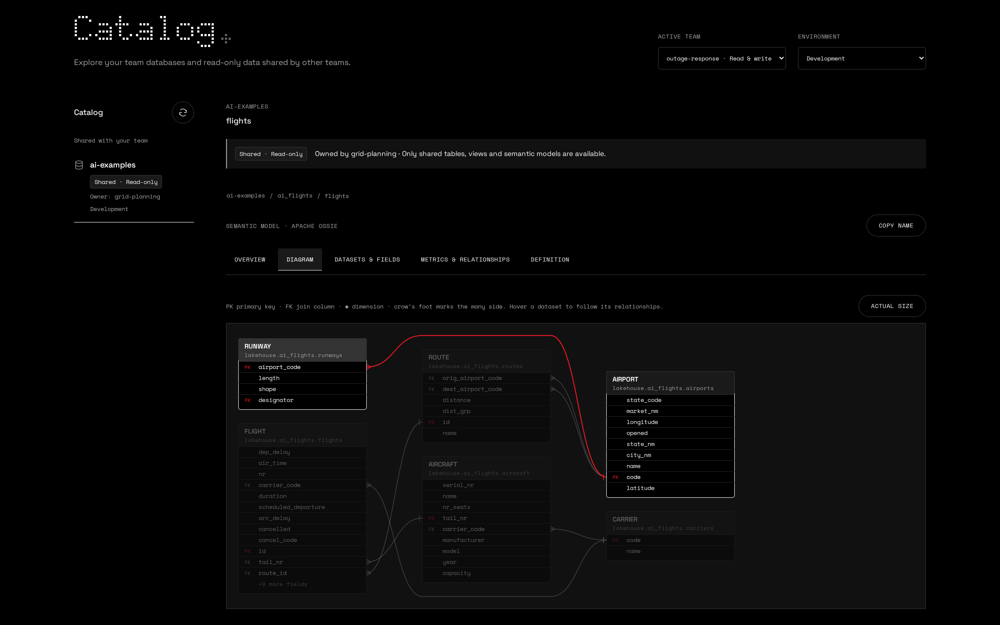

An AI agent has to know what the data means.
A team builds a data product.
In a notebook in the browser, the team creates 12,000 flights and stores them as Apache Iceberg tables, an open format that any data tool can read.

Nothing is published unless it passes.
Before a single table is written, the data is checked: every ID unique, every join valid, every time and place plausible.

The meaning goes into a semantic model.
It follows Apache Ossie, an open standard for semantic models: what one row means, how the tables join, and agreed metrics such as on-time arrival. The catalog stores it next to the tables.
See how the data fits together.
Drawn from the semantic model.



Ask your data a question in plain language.
An AI agent reads the semantic model first. So every answer uses the agreed definition, not the agent's own guess.
Share it, meaning included.
Another team or an outside partner reads the same tables and the same semantic model. No copies to maintain, and access can be revoked at any time.


Open.
Yours to run.
Iceberg Data Platform is open source. Install it on your own machine with one command.